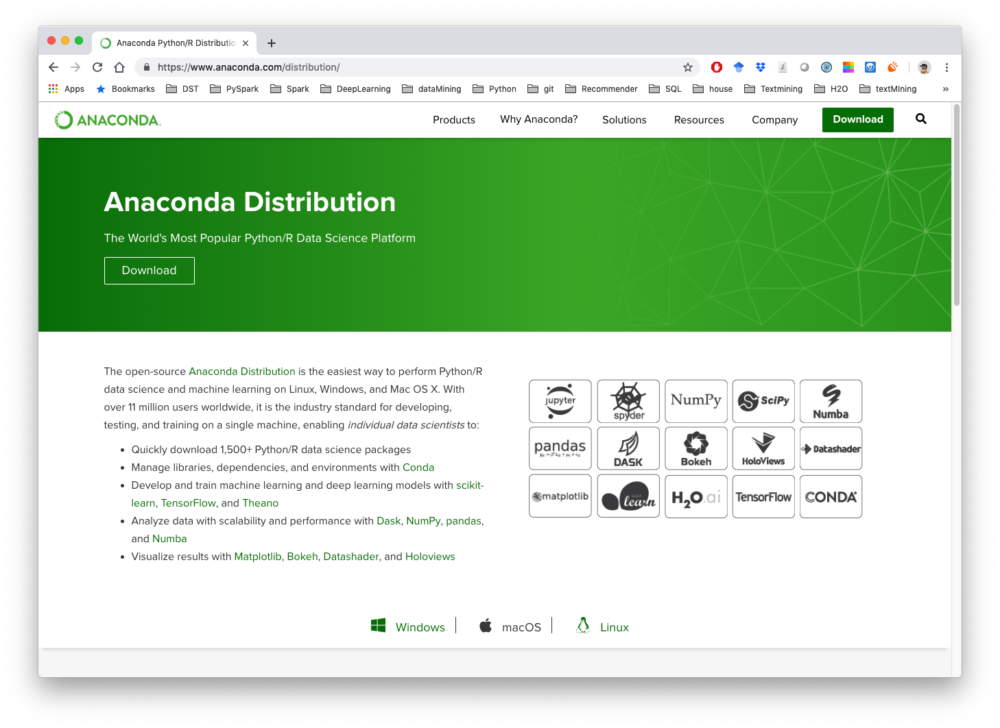

2. Python Installation¶
Note
This Chapter Python Installation is for beginner. If you have some Python programming experience, you may skip this chapter.
No matter what operator system is, I will strongly recommend you to install Anaconda which contains Python, Jupyter, spyder, Numpy, Scipy, Numba, pandas, DASK,
Bokeh, HoloViews, Datashader, matplotlib, scikit-learn, H2O.ai, TensorFlow, CONDA and more.
Download link: https://www.anaconda.com/distribution/
